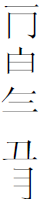

所謂靖藏本，因原為揚州靖應鵾所藏而得名。此書一九五九年夏由毛國瑤發現，一九六四年尚在，後迷失不知下落。據介紹原書題「石頭記」。存七十八回。缺第二十八與二十九回，第三十回殘失三頁。
書發現時，毛國瑤曾將書中批語與戚本進行比較，摘錄戚本所無的批語一百五十條，過錄在橫行練習簿上。後來將它發表於南京師範學院《文教資料簡報》一九七四年八、九月號（總第二十一、二十二合刊）。
此本中獨有一些極重要的批語。如第十三回命作者删去「秦可卿淫喪天香樓」、「遺簪、更衣諸文」的人是畸笏叟；如第二十二回畸笏叟所加的批語「前批知者聊聊，不數年，芹溪、脂硯、杏齋諸子皆相繼別去。今丁亥，只餘朽物一枚，寧不痛殺！」都極有研究資料價值。此外，批語中還提供了許多先前不知道的八十回後的佚稿情節。
由於靖本只有毛國瑤一人親見過，近年有不少研究者懷疑此本並不存在。詳細情况可參閱裴世安老先生編輯的《靖本資料》（自印本，2005年）。
第一回
1．作者自己形容（「生得骨格不凡，丰神迥異」句墨筆眉批）
2．補天濟時勿認真作常言（女媧煉石補天一段側批）
3．佛法亦須賞還况世人之債乎遊戲筆墨（「待劫終之日復還本質」句側批）
4．賴債者來看此句（同3側批）
5．果有奇貴自己亦不知若以奇貴而居即無真奇貴（「不知賜了弟子那幾段奇處」句墨眉）
6．事則實事然亦得叙有曲折有隱現有帶架有逆間有正辟空谷以至草蛇灰綫傳聲一擊兩鳴明修棧道暗度陳倉兩山霧雨雲龍對峙托月烘雲背面傳粉萬染千皺諸奇秘法亦復不少予亦逐回搜剔刹破明白以待高明批示開卷一篇立意真打破歷來小說果臼閱其筆則是莊子離騷之亞（「按跡尋踪」句墨眉）
7．這是畫家煙雲模糊處不被蒙敝方是巨眼（「並題一絕云」一段墨眉）
8．無是兒女之情始有夫人之分（「也就丟過不在心上」句側批）
9．走罷二字如見如聞非過來人若個能行（「士隱便說一聲走罷」句墨眉）
第二回
10．向只見集古集唐句未見集俗語者（「偶因一著錯便為人上人」墨眉）
11．是智者方能通誰為智者一嘆（「智通寺」三字墨眉）
12．雨村聿意還是俗眼只識得雙玉等未覺之先却不曉既證之後（遇龍鍾老僧一段硃眉）
第三回
13．君子可欺以其方也雨村當王莽謙恭下士之時即政老亦為所惑作者指東說西（「且賈政最喜讀書之人」句墨眉）
14．阿鳳三魂已被作者勾走了後文方得活跳紙上（「我來遲了不曾迎接遠客」句墨眉）
15．文字不反不見正文似此應從國策得（「不知是怎生個憊懶人物懵懂頑童」墨眉）
16．寶玉知己全用體貼工夫（「倘或摔壞了那玉豈不是因我之過」側批）
第四回
17．四家皆為下半部伏根（「這四家皆連絡有親…」句側批）
18．批書親見一篇薄命賦特出英蓮（叙英蓮遭遇一段墨眉）
19．無名之症即是病之名而反曰無像極（「已得無名之病」句側批）
20．廟了結文字伏下伏又千里綫胡盧字樣起胡盧字樣結蓋一部書皆係胡提之意也知乎（充發門子一段墨眉）
國瑤按：第一册封面下黏一長方形字條，長五寸，寬約三寸半，左下方撕缺，可見「

錄」字樣，墨筆書寫，內容如下：紫雪溟濛楝花老蛙鳴廳事多青草廬江太守訪故人潯江並駕能傾倒兩家門第皆列戟中年領郡稍遲早文采風流政有餘相逢甚欲抒懷搶於時亦有不速客合坐清炎鬬炎嫡豈無炙鯉與寒鷃不乏蒸梨兼蝓芫瀹棗二簋用享古則然賓酬主醉今誠少億首宿衛明光宮楞伽山人貌狡好馬曹狗監共嘲難而今觸痛傷懷抱交情獨剩張公子晚識施君通紵紅縞多聞直諒復奚疑此樂不殊魚在藻始覺詩書是坦途未妨車軲當行潦家家爭唱飲水詞納蘭小字幾曾知布袍廓落任安在說向名場爾許時
第五回
21．寡母孤兒畢有真（「不如你各自住著好任意施為」側批，此條應在第四回，誤抄在此）
22．此句定評想世人目中各有所取也按黛玉寶釵二人一如姣花一如纖柳各極其妙者皆性分甘苦不同世人之故耳（「人多謂黛玉所不及」句下小字夾批）
23．八字為二玉一生文字之綱（「求全之毀」句墨眉）
24．恰極補裘回中與此合看（「壽夭多因毁謗生多情公子空牽念」句墨眉）
25．絳芝軒諸事由此而生（硃眉）多大膽量敢作此文（墨眉）（「吾所愛汝者乃天下古今第一淫人也」句批）
26．寶玉心性只是體貼二字故為意淫（「惟心會而不可口傳」句側批）
第六回
27．寶襲亦大家常事耳已令領意淫之訓（回前批）
28．借劉嫗寫阿鳳正傳非泛文可知且優二進三進巧姐歸著（回前批）
29．一段雲雨之事完一回提綱文字（寶玉襲人一段側批）
30．能兩畝薄田度日方說的出（「守多大碗兒吃多大碗的飯」句墨眉）
31．駡死世人可嘆可悲（「我又沒有收稅的親戚」一段墨眉）
32．要緊人雖未見有名想亦在副册內者也（「先找著鳳姐一個心腹通房大丫頭名喚平兒」句下小字夾批）
33．觀警幻情榜方知余言不謬（同上句硃眉）
34．雖平常而至奇稗官中末見（「手內拿著小銅火筋兒」句墨眉）
35．五笑寫鳳姐活躍紙上（與劉姥姥對話墨眉）
36．何如當知前批不謬（同上句墨眉）
37．窮親戚來是好意思余又自石頭記中見了嘆嘆數語令我欲哭（「瞧瞧我們是他的好意思」句墨眉）
38．也是石頭記見了嘆嘆（「怎好教你空手回去呢」句墨眉）
39．如見如聞此種話頭作者從何想來應是心花欲開之侯（鳳姐與劉姥姥對話一節墨眉）
40．引阿鳳正文借劉嫗入初聚金玉為寫送宮花真變幻難測讀此等文字非細究再三再四不計數不能領會嘆嘆（回後批，墨筆）
第七回
41．他小說中一筆作兩三筆者一事啓兩事者均曾見之豈有似送花一回間三帶四贊花簇錦之文哉（回前批）
42．作出鯨卿隨筆却閒閒先妯娌一聚帶出一絲不見造（秦氏鳳姐說話一段墨眉）
43．焦大之醉伏可卿死作者秉刀斧之筆一字一泪一泪化一血珠惟批書者知之（焦大醉駡一節墨眉）
第八回
44．本意正傳是實曩時苦惱嘆嘆（「再或可巧遇見他父親」句硃眉）
45．沾光善騙人無星戥皆隨事生情調侃世人余亦受過此騙閱此一笑三十年前作此語之人觀其形已皓首駝腰矣使彼亦細聽此語彼則潸然泣下余亦為之敗興（「多早晚賞我們幾張貼貼」句墨眉）
46．十六字乃寶卿正傳參看前寫黛玉傳各不相犯令人左右難其於毫末（「罕言寡語」四句墨眉）
47．試問此一托比在青埂下啼嘯聲何如（「寶釵托於掌上」句硃眉）
48．余代答云遂心如意（同上句墨眉）
49．伏下文又夾入寶釵不是虛圖對的工（「好知運敗金無彩」句墨眉）
50．前回中總用灰綫草蛇細細寫法至此方寫出是大關節處奇之至（寶釵看玉一段墨眉）
51．可知余前批不謬（墨眉）
52．別人者襲晴之輩也（墨眉）
53．作者撫今之事尚記今金魁星乎思昔腸斷心催（墨眉）
第九回
54．此豈是寶玉所樂為者然不入家塾則何能有後回試才結社文字作者從不作安逸苟且文字於此可見（入家塾一段墨眉）
55．此以俗眼讀石頭記也作者之意又豈是俗人所能知余謂石頭記不得與俗人讀（上批隔一行墨眉）
56．安分守己也不是寶玉了（「寶玉終是不能安分守己的人」墨眉）
57．前有幻境遇可卿今又出學中小兒淫浪之態後文更放筆寫賈瑞正照看書人細心體貼方許你看（墨眉）
58．聲口如聞（「好囚攮的們，這不都動了手了麽」句墨眉）
第十回
59．這個理怕不能評（「叫他評評這個理」句側批）
60．吾為趨炎附勢仰人鼻息者一嘆（「早嚇的都丟在爪窪國去了」句墨眉）
61．不知心中作何想（墨眉）
第十一回無批
第十二回
62．千萬勿作正面看為幸畸笏老人（賈瑞與鳳姐對話一節墨眉）
63．可為偷情者一戒（「一夜幾乎不曾凍死」句墨眉）
64．教訓最嚴奈其心何一嘆（「那代儒素日教訓最嚴」句墨眉）
65．處處點出父母痴心子孫不肖此書純係自愧而成（墨眉）
66．調戲尚有故乎（「說你無故調戲他」句墨眉）
67．此節可入西厢內記十大快批評中畸笏（鳳姐潑糞一段墨眉）
第十三回
68．此回可卿夢阿鳳作者大有深意惜已為末世奈何奈何賈珍奢淫豈能逆父哉特因敬老不管然後恣意足為世家之戒秦可卿淫喪天香樓作者用史筆也老朽因有魂託鳳姐賈家後事二件豈是安富尊榮坐享人能想得到者其言其意令人悲切感服姑赦之因命芹溪删去遺簪更衣諸文是以此回只十頁删去天香樓一節少去四五頁也一步行來錯回頭已百年請觀風月鑑多少泣黃泉（回前長批）
69．九個字寫盡天香樓事是不寫之寫常村（「無不納悶都有些疑心」句下小字夾批）
70．可從此批通回將可卿如何死故隱去是余大發慈悲也嘆嘆壬午季春畸笏叟（同上句硃眉）
71．删却是未删之文（商議料理喪事及賈珍痛哭一段硃批）
72．何必定用西字讀之令人酸筆（設壇於西帆樓上一段硃眉）
73．是亦未删之文（瑞珠觸柱一段硃眉）
74．刺心之筆（賈珍蹲身跪下道乏硃眉）
75．讀五件事未完余不禁失聲大哭卅年前作書人在何處耶（「因想頭一件…」一段硃眉）
76．舊族後輩受此五病者頗多余家更甚卅年間事見知於卅年後令余悲痛血泪盈面（同上墨眉）
第十四回
77．用彩明因自身識字不多且彩明係未冠之童故也（命彩明釘造簿册一節墨眉）
78．數字道盡聲勢壬午春畸笏（「浩浩蕩蕩」句墨眉）
79．忙中閒筆□□玉兄作者良苦壬午春畸笏（「那一位是啣寶而誕者」句墨眉。二字蛀去）
80．牛丑清水柳乃卯也彪折虎字寅也陳即辰翼大為蛇寓巳字馬午也魁即鬼鬼金羊寓未字侯申也曉鳴鶏也寓酉字豕即石亥字寓焉守業犬也所謂十二支寓焉（回後批，墨筆）
第十五回
81．傷心筆（「面若春花，目似點漆」句硃眉）
82．又寫秦鍾智能事尼庵之事如此壬午季春畸笏（秦、智二人偷情一段墨眉）
第十八回
83．孫策以天下為三分衆才一旅項籍用江東之子弟人惟八千遂乃分裂山河宰割天下豈有百萬義師一朝卷申芟夷斬伐如草木焉江淮無涯岸之阻亭壁無藩籬之固頭會箕斂者合從締交鋤耰棘矜者因利乘便將非江表王氣終於三百年乎是知洴吞六合不免軹道之灾混一車書無救平陽之禍嗚呼山嶽崩頽既履危亡之運春秋迭代不免去故之悲天意人事可以凄滄傷心者矣 大族之敗必不致如此之速特以子孫不肖招接匪類不知創業之艱難當知瞬息榮華暫時歡樂無異於烈火烹油鮮花著錦豈得久乎戊子孟夏讀虞子山文集因將數語係此後世子孫其毋慢忽之（書眉墨筆書寫，誤字均未改）
84．妙玉世外人也筆筆帶寫故妙極妥極畸笏（墨眉）
85．前須十二釵總未的確皆是慢終也至來回警幻榜始知情正副又副乃三四副芳諱壬午季春（墨眉）
第十九至第二十一回無批
第二十二回
86．將薛林作甄玉賈玉看則不失書執筆本旨矣丁亥夏畸笏叟（墨眉）
87．鳳姐點戲脂硯執筆事今知者聊聊矣不怨夫（硃眉）前批知者聊聊不數年芹溪脂硯杏齋諸子皆相繼別去今丁亥夏只剩朽物一枚寧不痛殺（前批稍後墨筆）
88．此回未補成而芹逝矣嘆嘆丁亥夏畸叟（墨眉）
第二十三回
89．多大力量寫此一句余亦駭警况寶玉手回思十二三時亦會有是想時不再至不禁泪下（賈政呼喚寶玉一段墨眉）
90．批至此幾令人失聲（想起賈珠一段墨眉）
91．丁亥春日偶識一浙省客余意甚合真神品白描美人物所緣彼無暇宦緣奈不能留都下久且來幾南行矣至今耳火又余帳然之至阿顰墨緣之難恨與一結若此書嘆嘆丁亥□奇笏叟（墨眉。一字被蛀去，畸字殘半）
第二十四回
92，醉金剛一回文字伏芸哥仗義探庵余卅年來得遇金剛之樣人不少不及金剛者亦復不少惜不便一一註明耳壬午孟夏（回首批）
93．孝子可敬後來榮府事敗必有一番作為（「賈芸恐他母親生氣」墨眉）
94．果然（墨眉，與上批相接，隔數字）
第二十五至第二十七回無批
二十八回二十九兩回書缺
第三十回（後半少三頁）
95．無限文字痴情畫薔可知前緣有定强求人力非（回前批，恐有缺字）
第三十一至第三十六回無批
第三十七回
96．觀湘雲作海棠詩如見其嬌憨之態是乃實有非作其事者杜撰也（墨眉）
第三十八至第四十回三回無批
第四十一回
97．尚記丁巳春日謝園送茶乎展眼二十年矣丁丑仲春畸笏（妙玉泡茶一段墨眉）
98．妙玉偏辟處此所謂過潔世同嫌也他日瓜州渡口勸懲不哀哉屈從紅顔固能不枯骨□□□（妙玉不收成窑杯一節墨眉。缺字前二字看不清，似是「各示」兩字，第三字為蟲蛀去）
99．玉兄獨至豈真無吃茶作書人又弄狡猾只瞞不過老朽然不知落筆時作作者如何想丁亥夏（墨眉）
100．黛是解事人（「黛玉知他怪癖」一段墨眉）
101. 忽使平兒在絳芸軒中梳妝寶玉亦想（硃眉。用墨筆塗去，字尚可見）
第四十二回
102．應了這話固好批書人焉能不心傷獄廟相逢之日始知遇難成祥逢凶化吉實伏綫於千里哀哉傷哉此後文字不忍卒讀辛卯冬日（「遇難成祥，逢凶化吉」句墨眉）
103．也算二字太謙（「也算是個讀書人家」句墨眉）
104．男人分內究是何事（「究竟也不是男人分內之事」句墨眉）
105．讀書明理治民輔國者能有幾人（墨眉）
第四十三回
106．此語不假伏下後文短命尤氏亦可謂能於事矣惜乎不能勤夫治家惜哉痛哉（「我看你主子這麽細緻」一段墨眉）
107．人各有當方是至情（墨眉）
108．批書人已忘了作者竟未忘忽寫此事真忙中愈忙也（「正經社日可別忘了」一段墨眉）
109．這方是作者真意（茗煙祝告一段墨眉）
110．此處若使寶玉一祝則成何文字若不祝直成一暗如何散場看此回真欲將寶玉作一□□□□□□之女兒看□□□□乖覺可人之環也（墨眉。十字蛀去，後四字中只有一「火」旁尚存）
第四十四至第四十六回三回無批
第四十七回
111．提此人使我墮泪近回不提自謂不表矣乃於柳湘蓮及所謂物以分群也（柳湘蓮問話墨眉）
112．奇談此亦是□獃（墨眉。蛀一字）
113．獃子聲口如聞（墨眉）
114．紈褲子弟齊來看此（薛蟠挨打墨眉）
115．至情小妹回方出湘蓮文字真真神化之筆（墨眉）
第四十八回
116．湘菱為人根基不下迎探容貌不讓鳳秦端雅不讓龍平惜幼年羅禍命薄運乖至為側室雖會讀書而不得與林湘等並馳於海棠之社然此人豈能不入園惟無可入之隙耳獃兄遠行必使方可試思兄如何可遠行名利不可正事不可因借情二字生一事方妥（香菱入園一節墨眉） 〔一〕
117．此批甚當（前批稍後墨眉）
〔一〕按：庚本此回有夾批：「細想香菱之為人也，根基不讓迎探，容貌不讓鳳秦，端雅不讓紈釵，風流不讓湘黛，賢惠不讓襲平，所惜者青年罹禍，命運乖蹇，足為側室，且雖曾讀書，不能與林湘輩並馳於海棠之社耳。然此一人豈可不入園哉……」俞平伯1954年初版《脂硯齋紅樓夢輯評》漏去「不讓紈釵，風流不讓湘黛，賢惠」十二字（1960年增訂本已改正），而靖批此處出現同樣錯誤，有研究者認為此即靖批係依據俞輯進行僞造的「鐵證」。
第四十九回
118．一部書起是夢中寶玉情是夢中賈瑞淫又是夢中可卿家計長又是夢中今作詩也是夢中是故紅樓夢也今余亦在夢中特為批評夢中之人此特作此一大夢也（香菱夢中作詩交與黛玉一段墨眉）
119．四字道盡不犯寶琴（「年輕心熱本性聰明」一段墨眉）
第五十回
120．一定要按次序却又不按次序似脫落而不脫落文章枝路如此（拈次序一段墨眉）
121．的是湘雲寫海棠是一樣筆墨如今聯句又是一樣寫法（墨眉）
第五十一、五十二回無批
第五十三回
122．祭宗祠開夜宴一番鋪叙隱後回無限文字亘古浩蕩宏恩無所母孀兄先無依變故屢遭不逢辰心催人令斷腸積德子孫到於今旺族都中吾首門堪悲英立業雄輩遺脉孰知祖父恩（回前長批。在「祖父恩」之後稍隔數字尚有「知回首」三字。查「積德」以下是七絕，有正石印本在五十四前，較此通順）
123．前註不亦南北互用此文之謬（「那是鳳姑娘的鬼」墨眉）
124．招匪類賭錢養紅小婆子即是敗家的根本（賈珍對賈芹說話一段眉批）
第五十四回
125．文章滿去贓腹作余謂多（墨眉。有錯漏字。在「那男子文章滿腹却去作賊」一段上）
第五十五至第六十二回八回無批
第六十三回
126．原為放心終是放心而來妙而去（墨眉）
127．有天下是之亦有趣甚玩余亦之玩極妙此語編有也非親問（側批，在「只和我們鬧，知道的說是頑」句旁）
第六十四回
128．玉兄此想周到的是在可女兒工夫上身左右於此時難其亦不故證其後先以惱况無夫嗔處（寶黛說話一段側批）
第六十五回
129．今用大翻大解湜貫身頂法語是湖全（在尤三姐說話一段側批）
130．用如是語先一今口障（同上墨眉）
第六十六回
131．一攀兩鳥好樹之文沄將茗煙已今等馬出謂（「這些混話倒像是寶玉那邊的了」句側批）
132．極奇極趣之文金瓶肖把亡八臉打綠已奇些剩忘八不更奇（「我不做這剩王八」句墨眉）
第六十七回
133．四撒手乃已悟是雖眷戀却破此迷關是必何削髮埂峰時緣了證情仍出士不隱夢而前引即秋三中姐（回前批）
134．寶卿不以為怪雖慰此言以其母不然亦知何為□□□□寶卿心機余已此又是□□（寶釵勸慰薛姨媽句側批。前四字不清，後兩字蛀去）
135．似糊塗却不糊塗若非有風緣根基有之人豈能有此□□□姣姣册之副者也（墨眉。三字漶漫不清）
136．豈是犬兄也有情之人（「向西北大哭一場」墨眉）
第六十八至第七十七回無批
第七十八回
137．古來皆說閻王註定三更死誰敢留人至五更今忽以小女兒一番無稽之談及成無人敢翻之案且寓調侃世人之意駡盡世態真非絕妙之文可語觀者浮一白後不必看書了（墨眉）
138．十六而夭傷哉（墨眉）
139．共處不五載一日一夭別可傷可嘆（墨眉）
140．長顑額亦何傷黃面色（墨眉）
141．朝淬夕替發也思尤而垢同洽攘即取也（墨眉）
142．及暗輩嫉賈玉之才茲謫泛長沙（墨眉）
143．鯀真以亡身兮終然夭乎羽野（墨眉）
第七十九回
144．觀此知雖誄晴雯實乃誄黛玉也試觀證前緣回黛玉逝後諸文便知（寶黛談話一段墨眉）
145．先為對景悼顰兒作引（墨眉）
146．妙極菱卿聲口斬不可少看作他此言可知其心中等意略無忌諱疑直是渾然天真余為一哭（墨眉）
第八十回
147．是乃不及全兒昨聞煦堂語更難揣此意然則余亦幸有雨意期然合而不□同（在「菱角誰聞見香來著」一段，墨眉）
148．曲盡丈夫之道奇聞奇語（墨眉）
149．開生面立新場是不止紅樓夢一回惟此回更生新讀去非阿顰無是佳吟非石兄斷無是情聆賞難為了作者且愧殺也古今小說故留數語以慰之余不見落花玉何由至浬香家如何寫葬花吟不至石頭記埋香無閒字閒文□正如此丁亥夏畸笏叟（回後批）
150．玉兄生性之一天真顰又之知己外無一玉兄人思阻葬花吟之客確是寶玉之化身余幸甚幾昨作□為針之人幸甚西暗於襲人腰亦係伏之文累又忘情之引□□是（上批稍隔）
錄自《紅樓夢版本論叢》（南京師範學院中文系資料室編，1976年5月）
按：本文初刊於南京師範學院《文教資料簡報》（1974年8-9月號合刊），重載於《紅樓夢研究集刊》第十二輯（上海古籍出版社，1985.10.）。文字小有出入。
本章完!